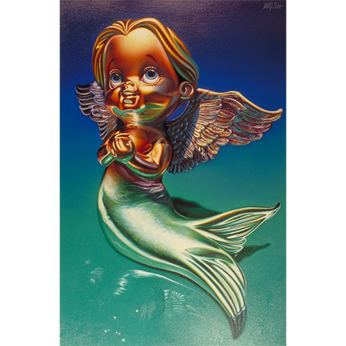

Exhibitions
Opera Gallery, gallery presentation (work exhibited and offered via gallery;exhibition title and dates unrecorded), New York, New York, US, circa 2000s 2010s.
Literature
Ron English, Popaganda: The Art & Subversion of Ron English (San Francisco: Last Gasp, 2001), p. 119. ISBN 1-887128-60-3.
Notes
The measurements in PoPaganda were erroneously reported as 24 x 24 inches.